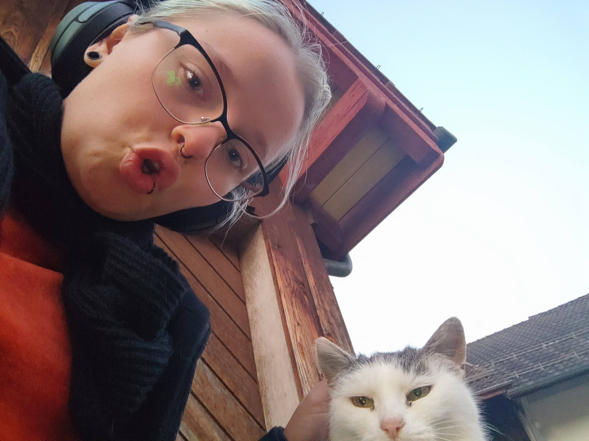

{kind=link}
Hauskatzen
22. November 2021Die Hauskatze (Felis catus) ist die Haustierform der Falbkatze. Sie zählt zu den beliebtesten Heimtiere. In der Rassekatzenzucht werden oft nur die Tiere als Hauskatze bezeichnet, die keiner anerkannten Katzenrasse angehören.
Körpermerkmale
Die Merkmale der Hauskatze schwanken je nach Verbreitungsgebiet. Bei den gezüchteten Formen sind sie von den Rassestandards abhängig, bei den kulturfolgenden Hauskatzen unterliegen sie dem jeweiligen Selektionsdruck, der von den natürlichen Umweltbedingungen abhängt. Hauskatzen sind im Durchschnitt etwa 50 Zentimeter lang (Kopf-Rumpf-Länge) und 4 Kilogramm schwer mit einer grossen Variationsbreite von ca. 2,5 kg bis ca. 8 kg. Männliche Tiere sind etwas grösser als weibliche. Die Länge des Schwanzes beträgt etwa 25 bis 30 cm. Eine Ausnahme ist die schwanzlose Manx-Katze von der Insel Man Die Schulterhöhe beträgt 30 bis 35 cm. In Verbreitungsgebieten mit kälterem Klima sind die Katzen allgemein schwerer und grösser, in wärmeren Gebieten sind sie leichter. Die National Geographic Society (1981) gibt die durchschnittliche Kopf-Rumpf-Länge mehrerer beliebter Katzenrassen mit 46 cm und die Schwanzlänge mit 30 cm an. Der bisher schwerste dokumentierte Hauskater war der stark adipöse „Himmy“ aus Australien mit 21,2 kg.
 Bushaltestellkatze in FreiensteinDie Hauskatze im Wildtyp besitzt eine M-förmige Zeichnung auf der Stirn, von den Augen zur Seite gehende „Kajal“-Striche, einen dunklen Aalstrich und dunkle Querstreifen (oder auch Tupfen) an den Körperseiten. Beine und Schwanz sind ebenfalls dunkel gebändert. Ihre Farbe variiert von grau-schwarz bis zu warmen Brauntönen. Die für die Hauskatze typischen Fellzeichnungen werden als Tabby bezeichnet. Neben dem oben beschriebenen Wildtyp, mackerel (= Englisch für Makrele) genannt, haben sich weitere Zeichnungen und eine Vielzahl an Fellfarben herausgebildet. In Europa, Nordamerika und Australien überwiegt die gestromte Zeichnung, die oft mit einer teilweisen Weißfärbung verbunden ist. Die Ohren der Hauskatze stehen aufrecht, sind breit am Ansatz, dreieckförmig und an den Spitzen leicht gerundet. Sie können unabhängig voneinander in verschiedene Richtungen gedreht sowie gänzlich flach an den Hinterkopf angelegt werden. Die Augen sind nach vorne gerichtet und ermöglichen so räumliches Sehen.
Stütz- und Bewegungsapparat
Knochen
Das Skelett der Hauskatze besteht aus über 230 Knochen. Der Schädel der Katze ist kurz und robust gebaut. Die Augenhöhle ist nicht vollständig knöchern geschlossen, der hintere Teil wird durch ein bindegewebiges Band verschlossen. Die Wirbelsäule besteht aus sieben Hals-, 13 Brust-, sieben Lenden-, drei zum Kreuzbein verwachsenen Kreuz- und 20 bis 23 Schwanzwirbeln. Das Schlüsselbein ist lediglich ein in den Musculus brachiocephalicus eingelagerter Knochen, der mit dem übrigen Skelett nicht in Verbindung steht. Am unteren Ende der Schulterblattgräte (Spina scapulae), dem sogenannten Acromion, besitzen Katzen einen nach unten gerichteten Processus hamatus und einen für Katzen typischen nach hinten gerichteten Processus suprahamatus. Der Oberarmknochen besitzt an seinem unteren Ende ein an der Innenseite gelegenes Loch (Foramen supracondylare) zum Durchtritt der Arteria brachialis und des Nervus medianus. Die kräftigen Hinterbeine sind eher auf Springen als auf schnelles Laufen spezialisiert. Die Katze kann dank ihrer kräftigen Muskulatur sehr gut springen und sprinten. Als typischer Ansitzjäger ist sie jedoch kein ausdauernder Läufer.
MbayoZehengänger
Die Hauskatze ist wie alle Kleinkatzen ein Zehengänger. An den Vorderbeinen hat sie fünf Zehen, wovon eine keinen Bodenkontakt hat, und an den Hinterbeinen vier. Die scharfen gebogenen Krallen dienen unter anderem zum Fangen und Halten der Beute. Sie liegen in Ruheposition durch elastische Bänder zurückgezogen in einer Hauttasche. Sie können zum Beutefang, zum Klettern, zum Markieren des Reviers durch Kratzmarken oder zur Verteidigung „ausgefahren“ werden.
Mbayo
Wir lieben unseren Kater sehr, auch wenn wir manchmal am Morgen aufwachen weil seine Scheisse so sehr stinkt und obwohl wir teilweise fast einen Herzinfarkt bekommen wenn er im Schlaf auf uns drauf springt. Was aber lieben wir an diesem kleinen, flauschigen Lebewesen so sehr? Hier findet ihr eine Tabelare Darstellung was Ich an Mbayo am meisten mag. Die Eins steht dafür was ich nicht so sehr mag und die Zehn für das was ich extrem liebe.
| Was | 1 | 2 | 3 | 4 | 5 | 6 | 7 | 8 | 9 | 10 |
|---|---|---|---|---|---|---|---|---|---|---|
| Toebeans | x | |||||||||
| Fluff | x | |||||||||
| Krallen | x | |||||||||
| Schnurren | x | |||||||||
| Zähne | x | |||||||||
| Pfoten | x |
Die Autoren: Wikipedia und Alexandra Rothlin
Werde Milionär in 2 Minuten
Im nächsten Beitrag geht es darum wie ich ohne Aufwand absolut legal super reich wurde.
nächster Blog-Eintrag